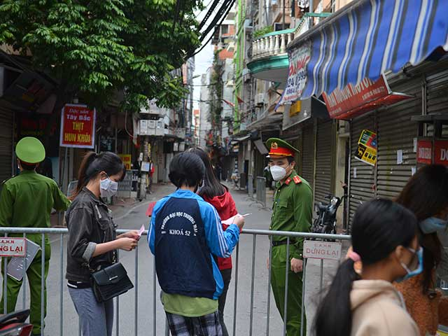

Hà Nội: Ổ dịch tại phường Phú Đô có 57 ca dương tính SARS-CoV-2, đề nghị nâng cấp độ 4 một khu vực
Ổ dịch tại phường Phú Đô, Nam Từ Liêm (Hà Nội) có 57 ca dương tính SARS-CoV-2. Lực lượng chức năng đã phong toả 1352 người dân tại 3 tổ dân phố.
Sáng 11/11, ông Nguyễn Anh Tuấn – Trưởng phòng Y tế quận Nam Từ Liêm (Hà Nội) cho biết, đến nay ổ dịch tại phường Phú Đô có 57 ca dương tính SARS-CoV-2 (trước 4/11 có 3 ca, từ 4/11 đến nay có 54 ca).
Theo ông Tuấn, phường Phú Đô đã nâng mức độ dịch lên cấp độ 3 (màu cam, nguy cơ cao). Hiện nay lực lượng chức năng đang đề nghị nâng cấp dịch ở tổ dân phố số 1, phường Phú Đô (vì tổ dân phố này đang có khoảng 30 ca dương tính SARS-CoV-2) lên cấp độ 4 (màu đỏ, nguy cơ rất cao).

Lực lượng chức năng lập rào chắn tại khu vực có F0 ở phường Phú Đô (Nam Từ Liêm, Hà Nội)
Trưởng phòng Y tế quận Nam Từ Liêm cho biết, chuỗi lây nhiễm tại ổ dịch phường Phú Đô được phát hiện vào ngày 4/11 qua xét nghiệm những người biểu hiện ho, sốt tới trạm Y tế phường Phú Đô khai báo. Từ nhóm bệnh nhân trên, quận Nam Từ Liêm xét nghiệm diện rộng, gồm người thuộc diện liên quan F0 và một số đối tượng nguy cơ trên địa bàn phường Phú Đô.
“Chúng tôi đã phong toả 14 ngày nội bất xuất, ngoại bất nhập đối với 1.352 người dân của 288 hộ gia đình thuộc tổ dân phố số 1, số 5 và số 6 tại phường Phú Đô”, ông Tuấn nói.
Nhận định về diễn biến ổ dịch Phú Đô, Trưởng phòng Y tế quận Nam Từ Liêm cho biết, sau khi thực hiện Nghị quyết 128, các nguồn lây bệnh rất nhiều, từ các địa phương về. Trước diễn biến tình hình dịch ở phường Phú Đô, quận đã chỉ đạo phải xét nghiệm hết các cư dân trong khu vực phong toả, đồng thời mở rộng xét nghiệm cho các đối tượng nguy cơ xung quanh bên ngoài.